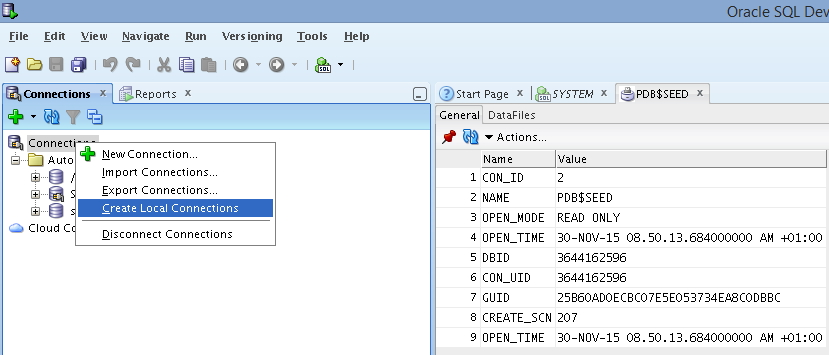

This was first published on https://www.dbi-services.com/blog/ocm-12c-preparation-create-cdb-in-command-line/ (2015-11-30)
Republishing here for new followers. The content is related to the versions available at the publication date.
.
This post starts a series about things I wrote while preparing the OCM 12c upgrade exam. Everything in those posts are written before taking the exam – so don’t expect any clue about the exam here. It’s based only on the exam topics, and only those points I wanted to brush up, so don’t expect it to be a comprehensive list of points to know for the exam.
Let’s start by creating a CDB manually as it is something I never do in real life (dbca is the recommended way) but as it is still documented, it may be something to know.
I usually put code and output in my blog posts. But here the goal is to practice, so there is only the commands to run. If you have same environment as mine, a simple copy/paste would do it. But you probably have to adapt.
Information about the exam says: Be prepared to use the non-searchable documentation during the exam, to help you with correct syntax.
Documentation about the ‘Create and manage pluggable databases’ topic is mostly in the Oracle® Database Administrator’s Guide. Search for ‘multitenant’, expand ‘Creating and Configuring a CDB’ and then you have the create CDB statement in ‘Creating a CDB with the CREATE DATABASE Statement’
You will need to have ORACLE_HOME set and $ORACLE_HOME/bin in the path.
If you have a doubt, find the inventory location and get oracle home from the inventory.xml:
cat /etc/oraInst.loc
cat /u01/app/oraInventory/ContentsXML/inventory.xml
Then I set the ORACLE SID:
export ORACLE_SID=CDB
I’ll put ‘oracle’ for all passwords:
cd $ORACLE_HOME/dbs
orapwd file=orapw$ORACLE_SID <<< oracle
In the dbs subdirectory there is a sample init.ora
I copy it and change what I need to change, here with ‘sed’ but of course you can do it manually
cp init.ora init$ORACLE_SID.ora
sed -i -e"s??$ORACLE_BASE?" init$ORACLE_SID.ora
sed -i -e"s?ORCL?$ORACLE_SID?i" init$ORACLE_SID.ora
sed -i -e"s?^compatible?#&?" init$ORACLE_SID.ora
# using ASMM instead of AMM (because I don't like it)
sed -i -e"s?^memory_target=?sga_target=?" init$ORACLE_SID.ora
sed -i -e"s?ora_control.?$ORACLE_BASE/oradata/CDB/&.dbf?g" init$ORACLE_SID.ora
sed -i -e"$" init$ORACLE_SID.ora
echo enable_pluggable_database=true >> init$ORACLE_SID.ora
cat init$ORACLE_SID.ora
In case I can choose the OMF example, I set the destinations
echo db_create_file_dest=$ORACLE_BASE/oradata/CDB >> init$ORACLE_SID.ora
echo db_create_online_log_dest_1=$ORACLE_BASE/oradata/CDB >> init$ORACLE_SID.ora
echo db_create_online_log_dest_2=$ORACLE_BASE/oradata/CDB >> init$ORACLE_SID.ora
From the documentation you can choose the CREATE DATABASE statement for non-OMF or for OMF. I choose the first one, and once again, here it is with ‘sed’ replacements that fit my environment:
sed -e "s/newcdb/CDB/g" \
-e "s?/u0./logs/my?$ORACLE_BASE/oradata/CDB?g" \
-e "s?/u01/app/oracle/oradata?$ORACLE_BASE/oradata?g" \
-e "s/[^ ]*password/oracle/g" > /tmp/createCDB.sql <<END
CREATE DATABASE newcdb
USER SYS IDENTIFIED BY sys_password
USER SYSTEM IDENTIFIED BY system_password
LOGFILE GROUP 1 ('/u01/logs/my/redo01a.log','/u02/logs/my/redo01b.log')
SIZE 100M BLOCKSIZE 512,
GROUP 2 ('/u01/logs/my/redo02a.log','/u02/logs/my/redo02b.log')
SIZE 100M BLOCKSIZE 512,
GROUP 3 ('/u01/logs/my/redo03a.log','/u02/logs/my/redo03b.log')
SIZE 100M BLOCKSIZE 512
MAXLOGHISTORY 1
MAXLOGFILES 16
MAXLOGMEMBERS 3
MAXDATAFILES 1024
CHARACTER SET AL32UTF8
NATIONAL CHARACTER SET AL16UTF16
EXTENT MANAGEMENT LOCAL
DATAFILE '/u01/app/oracle/oradata/newcdb/system01.dbf'
SIZE 700M REUSE AUTOEXTEND ON NEXT 10240K MAXSIZE UNLIMITED
SYSAUX DATAFILE '/u01/app/oracle/oradata/newcdb/sysaux01.dbf'
SIZE 550M REUSE AUTOEXTEND ON NEXT 10240K MAXSIZE UNLIMITED
DEFAULT TABLESPACE deftbs
DATAFILE '/u01/app/oracle/oradata/newcdb/deftbs01.dbf'
SIZE 500M REUSE AUTOEXTEND ON MAXSIZE UNLIMITED
DEFAULT TEMPORARY TABLESPACE tempts1
TEMPFILE '/u01/app/oracle/oradata/newcdb/temp01.dbf'
SIZE 20M REUSE AUTOEXTEND ON NEXT 640K MAXSIZE UNLIMITED
UNDO TABLESPACE undotbs1
DATAFILE '/u01/app/oracle/oradata/newcdb/undotbs01.dbf'
SIZE 200M REUSE AUTOEXTEND ON NEXT 5120K MAXSIZE UNLIMITED
ENABLE PLUGGABLE DATABASE
SEED
FILE_NAME_CONVERT = ('/u01/app/oracle/oradata/newcdb/',
'/u01/app/oracle/oradata/pdbseed/')
SYSTEM DATAFILES SIZE 125M AUTOEXTEND ON NEXT 10M MAXSIZE UNLIMITED
SYSAUX DATAFILES SIZE 100M
USER_DATA TABLESPACE usertbs
DATAFILE '/u01/app/oracle/oradata/pdbseed/usertbs01.dbf'
SIZE 200M REUSE AUTOEXTEND ON MAXSIZE UNLIMITED;
END
I’ve written it in /tmp/createCDB.sql that I’ll run later.
For whatever reasons in case you have to cleanup a previous attempt that left shared memory:
ipcs -m | awk '/oracle/{print "ipcrm -m "$2}' | sh -x
Now creating required directories, running the create database script I’ve created before, and following the steps in documentation
mkdir -p $ORACLE_BASE/oradata/CDB $ORACLE_BASE/admin/$ORACLE_SID/adump
mkdir -p $ORACLE_BASE/oradata/CDB $ORACLE_BASE/oradata/pdbseed
mkdir -p $ORACLE_BASE/fast_recovery_area
PATH=$ORACLE_HOME/perl/bin/:$PATH sqlplus / as sysdba
startup pfile=initCDB.ora nomount
create spfile from pfile;
start /tmp/createCDB.sql
@?/rdbms/admin/catcdb.sql
oracle
oracle
temp
quit
Note that I’ve added $ORACLE_HOME/perl/bin in the PATH because this is required for the catcdb. More info about it:
@rovaque Same problem! Same solution! Now I know why the Oracle Documentation tells: "Use DBCA" 🙂
— Alex Zaballa (@alexzaballa) November 29, 2015
The catcdb.sql is the long part in there (it run catalog and catproc on all conteainers – CDB$ROOT and PDB$SEED for the moment). Which means that if there is an exam where I have to create a database, it’s better to do that directly and read / prepare the other questions during that time.
Once done, you want to protect your database and run a backup. We will see that later.
I probably want a listener and see my service registered immediately
lsnrctl start
sqlplus / as sysdba
alter system register;
I’m not sure EM Express helps a lot, but let’s start it:
exec DBMS_XDB_CONFIG.SETHTTPPORT(5500);
And I can acces to it on http://localhost:5500/em
echo CDB:$ORACLE_HOME:Y >> /etc/oratab
If I have SQL Developer I’ll use it. At least to generate SQL statements for which I don’t know the exact syntax. It’s easier that going to documentation, copy/paste, change, etc.
I really hope that SQL Developer is there for the exam as EM Express do not have all features we had in 11g dbconsole.
You can create local connections to your CDB with a simple click: 
Everything that takes time need a backup because you don’t want to do it again in case of failure.
Let’s put the database in archivelog mode and run a backup
rman target /
report schema;
shutdown immediate;
startup mount;
alter database archivelog;
alter database open;
backup database;
It’s an online backup, so no problem to continue with operations that don’t need an instance restart.
Next part will be about creating pluggable databases.
{kind=link}